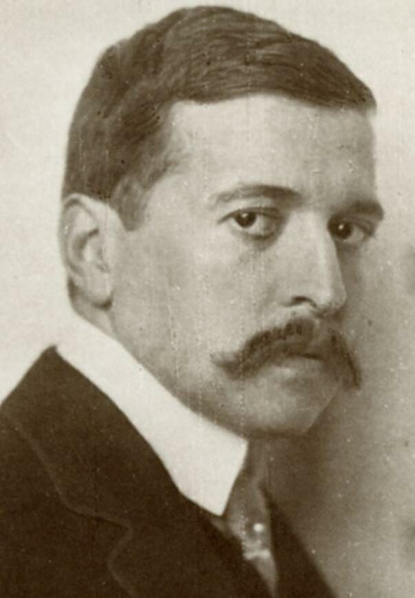
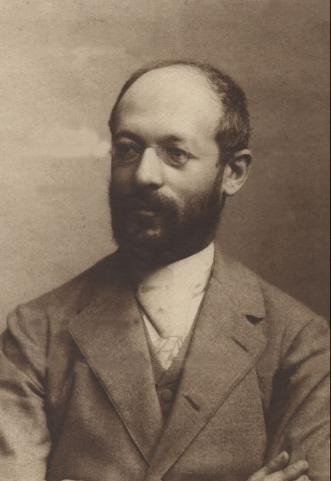
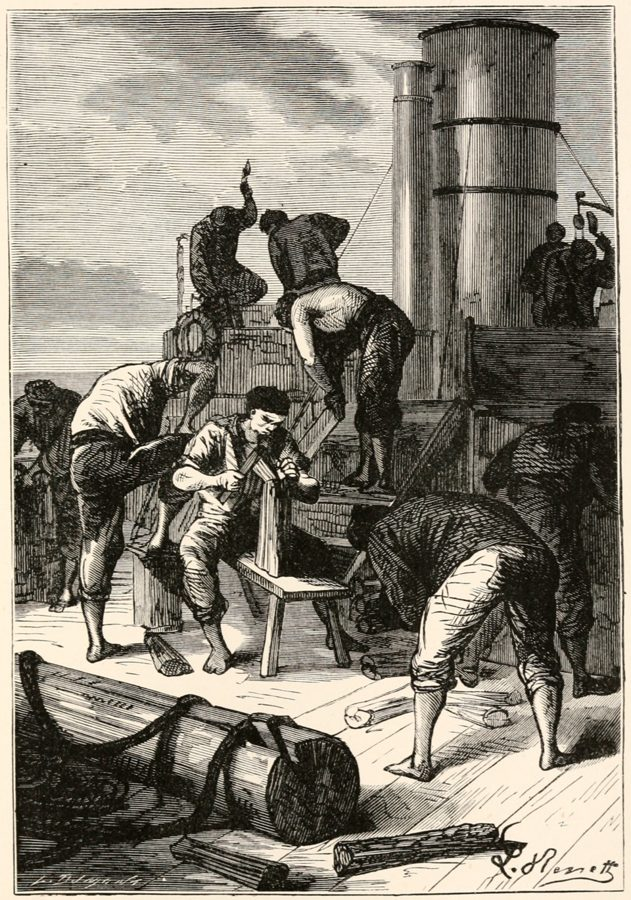

这一页在做什么
这一页是第 9 章的最后五节，五个故事都很短，跨度却很大：一出 1911 年的宗教寓意剧，一篇 1988 年的意大利独幕剧，凡尔纳的环球小说，一出 1960 年的巴黎喜剧，一部 1998 年的德国电影。作者照旧先讲故事，很少下判断：富人催逼欠债的人，自己却向死神讨宽限；弟弟赶到医院晚了几分钟；绅士拿八十天打赌；飞机变快，时间反倒不够；二十分钟要凑十万马克。读的时候抓两条线：钱和时间怎样一起短缺，速度怎样改变期限。
读之前：这一页在全书的哪里
上一页停在桑德拉尔：为了等一束好光拍照，行刑推迟了一刻钟。这一页讲第 9 章剩下的五个故事，是讲期限的第 8、9 两章的最后一页，下一页就是尾声。这五节之间作者几乎不搭桥，一节一个故事；它们和前面八节怎么串起来，看「读完」最后的「第 9 章合起来」。《耶德曼》里死神叮嘱「别浪费这段宽限」，德文原剧用的正是第 8 章讲过的期限（Frist）这个词。
一出中世纪式的宗教戏和一部九十年代的电影，主角都是「来不及」。作者把它们排在同一章里，期限在这五个故事里分别是谁定的，最后又是怎么解开的？
读的时候带着这几个问题。不用先找答案，读完回来对照「检查一下理解」。
- 耶德曼对还不上钱的人，和对来带他走的死神，各是什么态度？他自己最后的「债」是怎么了结的？§9
- 弟弟恩里科为什么偏偏在哥哥死后，才第一次能和哥哥「对话」？§10
- 福格赢下赌约，靠的是速度、沉着，还是日历？作者对哪一样打了问号？§11
- 飞机变快，为什么反而让贝尔纳的时间不够用？罗拉跑了三轮，期限的危机又是怎么「消失」的？§12、§13
这一页的路线
五节之间没有过渡，像一串短篇。前两节在死的边上：死神出现在宴会中间，急诊室里哥哥刚断气。后三节转到机器和钟表：火车轮船，喷气客机，街头的公共时钟。§9 最好跟，作者一边讲剧情，一边插进四段图片引文。§10 先讲一篇独幕剧，隔着一处花饰，又跳到塔布基另一篇剧本里的一句话，作者只在这里下了一句评语。§11 最长，作者跟着凡尔纳一站站走，挑出两次冒险细看，结局靠日历。§12、§13 节奏最快，几乎是复述剧情，判断藏在几个用词里。读着觉得「怎么全是剧情梗概」，不是你漏读了什么：这一章本来就是拿故事讲期限。
本站示意图。折线是阅读顺序，虚线左边两节在死的边上，右边三节靠机器和时刻表；下面的弧线标出首尾两节都是「钱和时间一起短缺」。
本站据原文里的数字画的：第 9 章每节挑一个期限，横轴每一格是十倍。§4 取莫泊桑《项链》还债的十年，§6 取古斯特少尉那一夜（约八小时），§7 取凌晨三点到七点零五分，§10 的「几分钟」按五分钟画。蓝色的条是这一页的五节，橙色是第 9 章前八节。
作者落在哪：作者在这几节里几乎只讲不评，留下的判断很短：期限之间的「间隙」不失为诗的别名；十九世纪变得最多的是交通；飞机越快，人越缺短时间；罗拉的电影里，钱和时间两种短缺叠在了一起。
分节地图
这一页是原书第 9 章的第 9–13 节。粗体是这一节的主角；斜体是英文这一节开头的几个词，在电子书里搜它就能跳到那里；节里的转折用段号点出来。读完打个勾。
- 耶德曼：富人、债户和死神给的一小时约 500 词Hugo von Hofmannsthal's play Everyman …四段图片引文，意思在下面「图里的引文」。第 105 段起死神登场。
- 急诊室里晚到几分钟的弟弟约 700 词The Italian author Antonio Tabucchi …第 117 段隔着花饰换到另一篇剧本，只有一句台词和一句评语。
- 福格环游地球：八十天的赌约约 1100 词Compared with the preceding centuries, the …第 124、125 段是作者挑出来细看的两次冒险，第 126 段是结局的机关。
- 波音-波音：三个空姐和一张时刻表约 800 词The comedy Boeing-Boeing (1960) by …第 132 段飞机变快，系统崩溃；最后一句是作者关于阅读时间的玩笑。
- 罗拉快跑：二十分钟凑十万马克约 800 词Since its premiere (1998), Tom …第 134 段解释为什么要跑三轮，第 138 段点出循环时间。
先用中文过一遍：这一页的概念
作者常常一笔带过、默认你懂的概念，这里先从书外讲一遍：它从哪来，是什么意思。它在这一页起什么作用，看每块最后一句。讲过的概念都汇总在概念汇总。
§9道德剧 morality play
15、16 世纪流行于英格兰和欧洲大陆的一种宗教戏剧。台上的人物大多不是具体的人，而是拟人化的抽象概念：死神、善行、知识、财富、友谊；主角叫「每个人」，代表全人类。最有名的英文剧《每个人》（Everyman）写于 15 世纪末：死神奉上帝之命召凡人去受审，凡人请朋友、亲戚、财物同去，都被拒绝，只有「善行」肯陪他到最后。荷兰语也有一出几乎一样的 Elckerlijc，哪个在先学界有争论。可以把这些角色想成类型而不是实例：「财富」不是哪一笔钱，是所有的钱。
在这一页：第 92 段说《耶德曼》照英国这出剧改写；第 107 段的「信仰」「善行」就是这类拟人角色。
§9齐美尔的《货币哲学》 Philosophie des Geldes（1900）
德国哲学家、社会学家齐美尔的大书。他问的不是钱怎样流通，而是钱怎样改变人：货币把一切质的差别化成数量，于是人和人之间的关系变得可以计算，也不再问对方是谁；钱本来只是手段，却越来越像目的本身。书的最后一章讲货币经济里的「生活风格」，包括生活节奏变快。三年后他在演讲《大都市与精神生活》里说得更直白：大城市的生活离不开准点和精确的计算。用程序员的话说，钱是一层抽象接口，调用的人不必知道对面是谁。
在这一页：第 96 段说同时代人把《耶德曼》看成这本书的戏剧版，第 100 段说耶德曼训人时「照齐美尔的路数」。
§11经度和时差 longitude, time difference
地球自转一圈是 24 小时，一圈 360 度，所以经度每差 15 度，太阳到正午的时刻差一小时，每差 1 度差 4 分钟。往东走是迎着太阳，每过一天，旅行者看到的「一天」都比家里的人短一点；绕地球一圈回来，正好比待在家里的人多看了一次日出，日历上就多出一天。凡尔纳在小说结尾就是这样算的：360 乘 4 分钟，正好 24 小时。今天地图上的日期变更线专门把这一天扣回来，那是 1884 年国际子午线会议定下格林尼治以后才渐渐通行的约定。程序员的类比：日志只按本地时间记、不存 UTC，绕一圈回来日期就错一天。
在这一页：第 126 段，作者只说一路向东跨过经度赚到一天，没提日界线；这一天让福格赢了赌约。
书里的人和作品
按在书里出现的顺序排，标题前是节号。作品只讲到读懂这一节需要的程度。
§9霍夫曼斯塔尔和《耶德曼》
《耶德曼》（Jedermann）副题是「富人之死的戏」，1911 年 12 月在柏林首演，导演是马克斯·莱因哈特（Max Reinhardt）。蓝本是英国道德剧《每个人》，诗行仿 16 世纪德语的打油诗体，所以满是 nit、Stündlein 这样的古字。1920 年萨尔茨堡音乐节创办，第一届就在大教堂广场上露天演了这出戏，此后成了音乐节的保留剧目（纳粹统治时期停演过）。剧情很简单：富人耶德曼在宴会上被死神召去受审，朋友、亲戚、财神都不肯同去，只有「善行」和「信仰」陪他。作者拿它看钱的期限怎样撞上命的期限。
霍夫曼斯塔尔Hugo von Hofmannsthal，1874–1929奥地利诗人、剧作家，萨尔茨堡音乐节的创办人之一，给理查德·施特劳斯写过几部歌剧脚本。书里有几处拼成 Hoffmannsthal，多了一个 f。

霍夫曼斯塔尔，1910 年，摄影师 Nicola Perscheid。Nicola Perscheid，公有领域，维基共享资源
§9齐美尔
齐美尔在柏林教了几十年书，学生和听众很多，却长期没有正式教席，五十多岁才在斯特拉斯堡大学拿到正教授的位子。他写过货币、大城市、时尚、陌生人，被看作社会学的奠基人之一。第 96 段只说霍夫曼斯塔尔的同时代人把《耶德曼》读成《货币哲学》的戏剧版，没说霍夫曼斯塔尔本人怎么想。剧中耶德曼那句「我的钱不认得你，也不认得我」，听起来正像齐美尔说的钱不问人情。
齐美尔Georg Simmel，1858–1918德国哲学家、社会学家，《货币哲学》的作者。这一页只在第 96、100 段被点名。

齐美尔，约 1901 年，摄影师 Julius Cornelius Schaarwächter。Julius Cornelius Schaarwächter，公有领域，维基共享资源
§10塔布基和两篇「没能成的对话」
意大利作家塔布基 1988 年写了两篇独幕剧，合成一本《未完成的对话》（I dialoghi mancati）。《时间紧迫》在急诊室：弟弟恩里科赶到时哥哥刚死，他只剩几分钟对着遗体说话。第 117 段那句台词出自另一篇，书里和注 17 都写作「佩索阿先生请接电话」，这一篇的意大利文题目其实是《皮兰德娄先生请接电话》：1935 年葡萄牙的一家精神病院里，一个自以为是佩索阿的人想给意大利剧作家皮兰德娄打电话。书里说「让这位葡萄牙诗人说」，说话的其实是这个人物。
塔布基Antonio Tabucchi，1943–2012意大利作家，书里写他生于 1943 年；2012 年在里斯本去世。他研究和翻译佩索阿；作者说他的小说很多地方可以读作时间主题的变奏。
佩索阿Fernando Pessoa，1888–1935葡萄牙诗人，用许多个「异名」写作，每个异名有自己的生平和文风。
塔布基，2008 年在西班牙埃斯科里亚尔的暑期讲座期间。Rebeca Yanke，CC BY-SA 2.0，维基共享资源
§11凡尔纳和《八十天环游地球》
凡尔纳（Jules Verne）的这部小说先在巴黎的报纸上连载，1873 年出书，故事从 1872 年 10 月 2 日的伦敦开始。作者拿它看机器的速度怎样和期限赛跑。书里转述的情节有几处和小说对不上：横穿美国平原时坐的是一架装帆的雪橇，不是滑雪板（第 122 段）；说福格「原来是个有心肠的人」的，是同行的英国军官克罗马蒂爵士，不是仆人（第 123 段）；亨丽埃塔号烧光木头后停在爱尔兰的昆士敦，众人换火车和轮渡才到利物浦（第 125 段）；福格回到伦敦时，比他以为的期限只晚了五分钟（第 126 段）。
凡尔纳Jules Verne，1828–1905法国小说家，《海底两万里》的作者。

小说 1873 年英译本的插图，图下原有说明「船员们干得热火朝天」：亨丽埃塔号上的人拆下船上的木料去烧锅炉。右下角有画家 Benett 的签名。Jules Verne（书），公有领域，维基共享资源
§12卡莫莱蒂和《波音-波音》
法国剧作家卡莫莱蒂的三幕喜剧，1960 年 12 月在巴黎首演，1965 年拍成好莱坞电影，1991 年被吉尼斯世界纪录列为全世界演出最多的法国剧。「林荫道戏剧」（théâtre de boulevard）指巴黎大道旁私营剧院演的通俗喜剧，靠门进门出、误会连环逗笑。第 128 段说波音「先造出喷气客机，又造出巨无霸」：707 在 1958 年投入航线，波音 747「巨无霸」1970 年才载客，晚于这出戏的首演，作者这里是把后来的事连着说了。
卡莫莱蒂Marc Camoletti，1923–2003法国剧作家，专写林荫道喜剧。
波音 367-80，波音 707 喷气客机的原型机，1954 年 7 月 15 日首飞；照片是 2005 年前后拍的，它陈列在史密森尼国家航空航天博物馆的 Udvar-Hazy 中心。贝尔纳的「系统」就建在这类飞机的时刻表上。Dane A. Penland（史密森尼国家航空航天博物馆），CC0，维基共享资源
§13提克威和《罗拉快跑》
德国导演提克威的电影，1998 年上映，女主角弗兰卡·波滕特（Franka Potente）顶着一头红发在柏林街头狂奔，男友曼尼由莫里茨·布莱布特罗（Moritz Bleibtreu）演。电影把同一段二十分钟讲了三遍，每遍只差一点小事，结局完全不同。节名在电子书里印作 Tom Tywker，注 20 又印作 Twyker，正确的拼法是 Tykwer，正文第 133 段是对的。作者拿它看钱和时间两种短缺怎样叠在一起。
提克威Tom Tykwer，1965 年生德国导演、编剧，《罗拉快跑》的配乐也有他一份。
图里的引文
下面这几段在你的电子书里是图片，长按查不了词，也搜不到。每块先说它在屏幕上的位置，再逐行给中文意思；行首的斜体是图里这一行开头的几个词，用来和图对上。古人的诗本站据原作的语言译，不从英译转译。
§9第 94–95 段 · 霍夫曼斯塔尔《耶德曼》，耶德曼和母亲 · 英译一张，德文原文一张
在第 93 段末尾（…Time is short even for his mother:）之后。前一张是英译，后一张是德文，下面照德文逐行。
- Hab aber wahrlich …（耶德曼）可我实在没多少时间。
- Bin froh, mein …（母亲）儿子，能见到你我很高兴，
- Geschieht mir so …可我心里这样难过：
- daß über weltlich …你忙着世上的营生，
- Dir bleibt für …留给我的时间就少了。
和英译的出入：耶德曼那行开头的 aber（可是）英译没译。剧里这一行前面还有半句：他说不愿在母亲面前躲开，可是没时间。
nit
第 2 行
（德文，旧）不
就是 nicht。全剧故意用这种古旧、带南德口音的字，下面还有 Stündlein、Schal。
weltlich Geschäftigkeit
第 6 行
（德文）尘世的奔忙
weltlich 是「世俗的」，和宗教相对；Geschäftigkeit 是忙忙碌碌，词根 Geschäft 也是「生意」。英译作 worldly occupations。
§9第 98–99 段 · 《耶德曼》，耶德曼说自己的钱 · 英译一张，德文原文一张
在第 97 段末尾（…keep up with all his payments:）之后。前一张是英译，后一张是德文。
- Das Geld ist …这笔钱根本已经不是我的了，
- Muß heut noch …今天之内就得交出去，
- Als Kaufschilling für …作一座游乐园子的买价。
- Ich steh dem …我已经向卖主许了诺，
- Er will aufs …他不肯再等这笔钱了。
和英译的出入：第 4 行德文是「卖主」（Verkäufer），英译成了 buyer（买主），弄反了：耶德曼是买园子的人，欠的是卖主的钱。第 3 行 full payment 的 full 是英译加的。剧里这几句是耶德曼推托一个来讨钱的穷邻居时说的。
Kaufschilling
第 3 行
（德文，旧）买价，价款
Kauf 是买，Schilling 原是一种钱币，这里泛指一笔钱。
Lustgarten
第 3 行
（德文）游乐园林
贵族供消遣的观赏花园。Lust 在这里是旧义「快乐」，不是今天的「情欲」。
im Wort stehen
第 4 行
（德文）许下诺言，以信用担保
ich steh dafür im Wort：我为这事说过话，得算数。
§9第 101–103 段 · 《耶德曼》，耶德曼训斥欠债的人 · 英译两张，德文原文一张
在第 100 段末尾（…in Simmel's manner he admonishes:）之后。前两张是英译，第三张是德文。
- Wer heiß dich …谁叫你借带利息的钱？
- Nun hast du …这下你得了应得的报应。
- Mein Geld weiß …我的钱不认得你，也不认得我，
- Und kennt kein …它不看人的情面。
- Verstrichne Zeit, verfallner …时间过了，日子到期了，
- Gegen die bring …你要告，就告它们去。
和英译的出入：第 4 行英译作「也不管一个人的名声」，德文是圣经里的成语「不看人的情面」，意思是一视同仁、不偏袒。剧里这是耶德曼对一个要被关进债务人监狱的债户说的。
heiß
第 1 行
（德文）吩咐，叫
本站查到的 1911 年初版剧本作 hieß，heißen 的过去式，「谁叫你……」。图里印的 heiß 可能是排印错，也可能是别的版本。
Ansehen der Person
第 4 行
（德文）人的情面，看人下菜碟
出自路德译的圣经，如《罗马书》2:11 Denn es ist kein Ansehen der Person vor Gott（「因为神不偏待人」）。kein Ansehen der Person 就是「不论是谁」。耶德曼把上帝的公正说到了钱身上。
verfallner Tag
第 5 行
（德文）到期的日子
verfallen 说票据、期限「到期、失效」。和前面的 Verstrichne Zeit（流逝了的时间）一起，像法律文书里的话。
§9第 108–110 段 · 《耶德曼》剧末，「信仰」对魔鬼说的话 · 英译两张，德文原文一张
在第 107 段末尾（…as we learn at the end of the play:）之后。前两张是英译，第三张是德文。
- Gott hat geworfen …上帝已经投进秤盘的，
- Sein Opfertod und …是他献祭的死和殉难的苦。
- Und Jedermannes Schuldigkeit …耶德曼欠下的一切，
- Vorausbezahlt in …都已预先付清，永远作数。
和英译的出入：剧里这四行是「信仰」对来抢耶德曼灵魂的魔鬼说的。德文第 4 行没有动词，像账簿上的一行批注；英译补成了完整的句子。
Schal
第 1 行
（德文，旧）秤盘
即 Schale、Waagschale。天平一边是人欠下的，一边是基督的死，后者压过前者。
Schuldigkeit
第 3 行
（德文）欠下的，该还的
词根 Schuld 既是「债」也是「罪」。英译 debt 只留下钱债这一层，德文两层都在，正好接上耶德曼放债的一生。
词与短语
你用 Kindle，单个生词长按就能查，这里只收词典帮不上的：每个词都认识、合起来不懂的说法，学术腔，没翻译的外文，典故。斜体小字是原句里连续的几个词，错字照电子书原样，搜它就能跳到那里。图里的词在上面「图里的引文」里。
§9 耶德曼：富人、债户和死神给的一小时
morality play
… an anonymous English morality play with …
道德剧
见概念块「道德剧」。anonymous 说作者不详。
be on the program
… has been on the program of …
列在演出节目单上
program 是节目单，不是程序。has been … ever since 1920：1920 年以来一直在演。
payment periods
… money matters and payment periods, and …
付款期限
period 是一段时间，不是句号。这正是第 8 章说的
期限：一段有起点有终点的时间。
on the lookout for
… always on the lookout for ways …
时时留意、到处找（机会）
lookout 原是瞭望哨。
haste is his element
… businessman, haste is his element.
忙乱正是他如鱼得水的状态
element 取「（鱼的）水、（鸟的）天空」那层意思，in one’s element 是如鱼得水。
Mein Geld muß für mich werken und laufen
… his wealth are in a hurry:
（德文）我的钱得替我干活、替我奔跑
剧中耶德曼的原话，前面的引号里是英译。电子书印成 mug fur … and，见本节末尾的错字表。钱像伙计一样替主人跑腿，就是「钱生钱」。
caught up in
… Everyman is caught up in all …
卷进，脱不开身
不是「赶上」。被一堆约会和期限缠住。
keep up with
… can hardly keep up with all …
应付得过来，跟得上
这里说付款一笔接一笔，他自己都快付不过来了。
debtor's prison
… into the debtor's prison.
债务人监狱
欧洲旧时把还不上钱的人关起来，直到还清为止，19 世纪才陆续废除。剧里叫 Turm（塔楼）。
no mercy to spare
… has no mercy to spare for …
一点怜悯也不肯给
to spare 是「多余的、匀得出来的」，have no time to spare 是腾不出时间。他的怜悯像时间一样「匀不出来」。
in Simmel's manner
… and in Simmel's manner he …
照齐美尔的路数
作者的打趣：剧中人训起人来，像在背《货币哲学》。见概念块。
Buhlschaft
(their Buhlscha ft, as Hoffmannsthal calls
（德文，旧）私情，情妇
电子书里断成了 Buhlscha ft。书里说霍夫曼斯塔尔用这个古字称两人的「私情」；在剧里，Buhlschaft 就是耶德曼情妇这个角色的名字。
provide an account of his life
to provide an account of his life
交代一生的账
account 既是「交代」也是「账目」。死后受审要交的是一本账，和他放债的一生正好呼应。
a final reprieve
… grants him a final reprieve, but …
最后一次缓期
reprieve 本是死刑的暂缓执行，也是这一节的节名。
ein Stündlein Zeit
(ein Stundlein Zeit), with the stern warning:
（德文）一小会儿时间
Stündlein 是「小时」的指小词，口气是「就一会儿」，电子书丢了变音。剧里死神接着那句「别浪费」，原话是 vertu nit diese Frist：别浪费这段期限。
last-short enough!-hour
… during his last-short enough!-hour.
他最后那一小时（真够短的！）
两个连字符原是破折号，中间是作者插的一句感叹。
Faith and Works
… by his good Catholic friends …
「信仰」和「善行」
剧中的两个拟人角色。天主教讲得救要信仰也要善行，路德则强调「唯独信仰」；作者说它们是 good Catholic friends，带一点打趣。
paid in advance
… has already been paid in advance, …
预先付清
基督的死替人还了罪债。放了一辈子债的人，最后靠别人预付的钱得救。
§10 急诊室里晚到几分钟的弟弟
Il tempo stringe
… a short dialogue entitled
（意大利文）时间紧迫
stringere 是「勒紧、收紧」，时间像绳子越勒越紧。英译 Time is Tight。
dialogo mancato
(dialogo mancato). It takes place in
（意大利文）没能成的对话
mancato 是「失败的、错过的」。前面 dialogue manque 是法文 dialogue manqué，电子书丢了重音。
on his lips
… name on his lips, as the …
嘴里念着
哥哥死前叫着弟弟的名字，弟弟却不在场。
in traction
… one leg suspended in traction.
（医）做牵引
骨折后用重物把腿吊起拉直。这个重物是本节结尾的伏笔。
settle accounts with
… he bitterly settles accounts with …
跟某人算总账
字面是结清账目，引申为清算旧怨。又是一个账本的比喻。
swallow all this
Enrico has had to swallow all this
把这些都忍下去
swallow 是咽下，引申为忍气吞声。
Cain and Abel
… distantly recall Cain and Abel.
该隐和亚伯
《创世记》第 4 章，亚当的两个儿子，哥哥该隐出于嫉妒杀了弟弟亚伯。distantly 是「隐约地」：这里是弟弟恨哥哥，角色反了过来。
Orphic ode
… form of an Orphic ode to …
俄耳甫斯式的颂歌
俄耳甫斯是希腊神话里的歌手，Orphic 指带神秘、预言口吻的诗。弟弟模仿父亲的腔调，给哥哥的「美好未来」唱赞歌，是反讽。
run through his fingers
… life will run through his fingers.
从指缝里溜走
像沙子一样抓不住。父亲眼里的小儿子，一生会白白流掉。
make time
… with which he could make time.
抢时间，开快车赶路
不是「挤出时间」。make good time 是路上走得快；哥哥开快车，就是在「造」时间。
crossed the finish line (fine di corsa)
… finally crossed the finish line (fine
冲过了终点线（意大利文：赛程的终点）
委婉地说他车祸死了。一辈子在赛跑的人，跑到了终点。
rear up
… the corpse to rear up as …
（像马一样）猛地立起来
rear up 常说马抬起前蹄直立。牵引的重物砸下，尸体一下弹起来，像活了一样。
frattempo (interim)
The interim; that's not a bad
（意大利文）其间，间隙
fra（在……之间）+ tempo（时间）。日常说 nel frattempo，「在此期间、与此同时」。前面的意大利文引语里，the 是扫描错字，应为 che。
not a bad synonym
… not a bad synonym for poetry.
不失为（诗的）同义词
往轻里说：not bad 就是「挺好的、很贴切」。这是这一页作者少有的一句自己的判断。
§11 福格环游地球：八十天的赌约
mastery of locomotion
… its technological mastery of locomotion.
对「移动」的技术掌控
locomotion 是位移、行进，不是火车头（locomotive）。说的是火车轮船让人跑得更快更远。
temporal feats
… in their temporal feats travelers …
在时间上创下的壮举
temporal 这里是「时间上的」，比如多少天跑多远；它也有「世俗的」一义，这里不是。
while his time away
… is whiling his time away at …
消磨时间
while 作动词，只用在 while away the time 里。福格整天无事，却最守时。
Reform Club
… away at the Reform Club.
改革俱乐部
伦敦蓓尔美尔街上的绅士俱乐部，1836 年创办，因支持 1832 年的议会改革得名。
retarding elements
which Verne relates with relish, that
延宕情节
戏剧学术语，德文说 retardierendes Moment：在高潮前故意设的阻碍，拖住结局、吊住观众。第 2 节讲席勒的谣曲时用过同一个词。relates with relish 是「讲得津津有味」。
add plus and minus signs
… to add plus and minus signs …
在时间账上记加记减
意思是行程不再分秒不差，要记下哪里耽误了、哪里抢回来了。
on skis
… journey on skis, on the back …
踩着滑雪板
小说里其实是一架装了帆的雪橇，在结冰的大平原上滑行。
immolation of a widow
… ceremonial immolation of a widow-a
寡妇殉葬
印度旧俗萨蒂（sati），寡妇随亡夫火葬，凡尔纳拼作 sutty；英属印度 1829 年起明令禁止。widow-a 中间原是破折号。
phlegmatic gentleman
… Is this phlegmatic gentleman a …
冷静、不动声色的绅士
phlegmatic 来自古代「四种气质」里的黏液质，冷淡、迟缓。英国绅士的定型形象。
homme de coeur
(homme de coeur) after all?
（法文）有心肠的人
coeur 是心。福格回答：有时候是，在我有时间的时候。小说里问这话的是同行的英国军官，不是仆人。
the expectant reader
… the expectant reader must wait patiently …
满心期待的读者
作者打趣：想看英雄救美后谈恋爱的读者，还得耐心等到最后一章。expectant 也有「待产的」一义，这里不是。
(really?)
… is reduced (really?) by its high …
（真的吗？）
作者插进括号里的怀疑：火车开得快，重量并不会变小。他不信这条「物理定律」。
Fogg-he can do this, too-sails
Fogg-he can do this, too-sails the
福格（这个他也会）亲自驾船
两个连字符原是破折号，中间是插入语，主句是 Fogg sails the ship himself。
time machine
… a pure time machine.
时间机器
船上能烧的都烧了，只剩一个光秃秃的船壳，整条船只为抢时间而存在。也让人想到威尔斯 1895 年的小说《时间机器》。
deus ex calendis
… with a deus ex calendis having …
（仿拉丁文）从日历里降下的神
仿 deus ex machina（从机关里降下的神），古希腊戏剧用吊车放下一位神来收拾残局。calendae 是罗马历每月的第一天，calendar 由此而来。救福格的不是神，是日历。
by a matter of moments
… won by a matter of moments.
只差片刻
a matter of 加时间，是「也就……而已」。
§12 波音-波音：三个空姐和一张时刻表
Boulevard farce
one of the most successful of recent
林荫道闹剧
法文 théâtre de boulevard，见上面「书里的人和作品」。farce 是靠巧合和误会取笑的闹剧。
a shortage of short time
… from a shortage of short time.
「短时间」不够用
文字游戏：大家缺的不是时间，而是「更短的」飞行时间。这一章说的短缺，到这里变成了对速度的需求。
signed a clever pact with short time
… signed a clever pact with short time,
和「短时间」立了一份聪明的契约
pact 让人想起前面施莱米尔和魔鬼的契约。贝尔纳把幸福押在航班的时长上。
the prejumbo era
… in the prejumbo era, when …
「巨无霸」以前的年代
jumbo 指波音 747 一类的宽体客机。
no leeway
… schedule has no leeway for dealing …
没有余地
leeway 原是船被风吹偏的距离，引申为回旋余地。日程排得一分钟不差，出一点意外就全乱。
replying in monosyllables
… by replying in monosyllables.
只用嗯、啊来应付
monosyllable 是单音节词，答话只有 yes、no、hm，就是敷衍、不接话。
cutting it close
… a little scared by it:
卡得太紧了
后面引号里罗贝尔的话。cut it close 是时间、距离留得极少，差点出事。
Les horaires sont les horaires
because airplanes have to fly on time:
（法文）时刻表就是时刻表
同义反复的口头禅，意思是没商量。本站提醒：第 8 章讲法律期限时也有一句 Deadlines are deadlines，作者没有明说两句的呼应。
La precision fait la force
at the right time, following Bernard's motto:
（法文）精确产生力量
仿格言 L’union fait la force（团结就是力量，比利时的国家格言）。précision 电子书丢了重音。
fate will have its say
But of course fate will have its say
命运总要插一手
have one’s say 是发表意见、说上话。喜剧里的「命运」是工程师造出的快飞机。
not entirely selfless
… with Robert's not entirely selfless help, …
不全是出于好心
往轻里说：罗贝尔帮忙时也打着自己的算盘。
§13 罗拉快跑：二十分钟凑十万马克
cult status among film buffs
… acquired cult status among film buffs.
在影迷里成了一部「邪典」名片
cult film 是小众狂热追捧的电影，不是宗教邪教。buff 是迷、发烧友。
get out of this fix
… get out of this fix and …
摆脱这个困境
fix 作名词是窘境、麻烦，in a fix 是陷入困境。
running time
of twenty minutes as the deadline for
片长；也是「奔跑的时间」
前面引号里的 running time 是电影的放映长度。作者说他连写三个 run，是因为二十分钟的片长撑不起一部长片，电影只好让罗拉跑三轮；running time 在这里也就带上了「奔跑的时间」这一层。
full-length film
… make a full-length film.
一部长片
正常放映长度的故事片，和短片相对。
twelve sharp
… the deadline at twelve sharp.
十二点整
sharp 放在钟点后面是「整、准时」。
cyclical time
(we are in cyclical time here!)
循环时间
时间不是一去不回的直线，而是一圈圈重来。见第 8 章的
循环时间。作者用感叹号，是半开玩笑。
the bum
The bum, who in the meantime
那个流浪汉
美国口语，bum 是流浪汉、无业游民（英国口语里才是屁股）。
vanishes into thin air
… resolved and vanishes into thin air,
烟消云散
什么也没留下。前面 fiasco 是一败涂地的大失败。
读不通的扫描错字：
- Mein Geld mug fur mich werken and laufen应为 Mein Geld muß für mich werken und laufen。
- Pare the non ci sia molto tempothe 应为 che：「好像没有多少时间了」。
- ipotetico stadio the si chiama frattempothe 应为 che：「在这个叫作间隙的假设的阶段里」。
- betting on the fateful number后面引号里的 2o 应为 20。
读完：作者到底说了什么
读完这一页的几节再看。下面是作者在这几节里的论点，由本站按论点重新组织，不按原书的顺序；每条右上角是依据所在的段落，拿不准就回书里那几段再读一遍。
在《耶德曼》里，钱的期限和命的期限是同一本账
作者引同时代人的读法：这是《货币哲学》的戏剧版。富人按期限把欠债的人送进监狱，死神一来，自己也只能讨一段宽限，最后的债由上帝预付。作者只讲不评。
§9 第 96、100、106、107 段期限之间剩下的那点时间，作者说不失为「诗」
弟弟晚到几分钟，对遗体的独白反倒是两兄弟第一次真正的对话。作者借塔布基剧中人的话收尾，只加一句评语：间隙不失为诗的同义词。
§10 第 112、114、117 段十九世纪变得最多的是交通，速度开始和期限赛跑
作者说，十九世纪比此前几个世纪变得最多的是机器带来的移动速度；绕地球一圈要多久，先由小说回答。作者对「速度吃掉重量」打了问号；最后救福格的是日历上多出的一天。
§11 第 118、124、126 段飞机越快，人越缺「短时间」
作者说，到 1960 年环球旅行的人都已明白，航空业缺的是更短的飞行时间。贝尔纳的系统建在飞得慢的年代，新飞机让空姐们提早回来，精确的时刻表没有余地，系统就塌了。
§12 第 128、130、132 段罗拉的二十分钟：钱和时间两样一起短缺
作者说这部电影里两种短缺重合：十万马克和二十分钟。二十分钟撑不起长片，就让同一段时间重来三轮，作者称之为循环时间；第三轮两袋钱同时到手，危机像没发生过。
§13 第 133、134、138、139 段
合起来：这五个故事都停在期限的最后一刻：死前的一小时，晚到的几分钟，赌约的最后三秒，航班之间的空当，二十分钟。排在一起看：前两个期限由死亡划定，后三个和机器、时刻表、钟表缠在一起，机器越快，期限并没有变宽松。
第 9 章合起来：作者一开头就说，期限的压力很难用抽象概念讲清，只有叙事靠得住，于是整章是十三个故事。期限的来源一路在换：先是死刑、债和魔鬼的契约（山鲁佐德、夏洛克、达蒙、施莱米尔、爱玛、项链），再是荣誉（冯塔纳、施尼茨勒、马尔克斯），然后是媒体，最后是死神、交通和时刻表。有人在最后一刻得救，有人没有。作者大多只讲不评。
值得停下来的句子
The interim; that's not a bad synonym for poetry.— §10 第 117 段。本站译：间隙，这倒是诗的一个不坏的同义词。
前半句只有两个词，是把上一句台词里的 frattempo 拎出来重复一遍，分号后面才是作者的话。not a bad 是往轻里说，意思是「相当贴切」。这一节前面全是期限：哥哥的未来到头了，护士催人，医院要腾床。作者在这里把期限之间剩下的那一点空隙，和诗连在了一起。
we need not explain here, since reading time is short.— §12 第 132 段。本站译：这里就不必细说了，因为读书的时间也短。
这是第 132 段最后一句的后半，前面一长串问的是：用了什么计谋，才让这出闹剧收成两对一夫一妻、外加一个照样独立快活的珍妮特。作者不说，理由是「阅读时间短」。整本书讲时间短缺，作者在这里拿读者自己的时间开了个玩笑，也顺手省掉了一段剧情复述。
检查一下理解
先在心里答，再点开。答错的那题，回书里把对应那一节再读一遍。
1.（§9）耶德曼怎样对待还不上钱的人？轮到死神来找他，他又怎么做？
他说时间过了、日子到期了，钱不认人，眼看着债户被关进债务人监狱。死神来了，他却说自己还年轻、没准备好，苦苦哀求，讨到了一小时的宽限。
2.（§9）剧末耶德曼欠下的「债」是怎么了结的？
他在「信仰」和「善行」的陪伴下悔改。剧末宣布：上帝已把基督的献祭之死放上秤盘，耶德曼欠的一切早已预先付清。
3.（§10）作者为什么说《时间紧迫》既是「没能成的对话」，又是两兄弟第一次真正的对话？
哥哥已经死了，答不了话，所以只能是独白。可也正因为哥哥再不能打断、纠正他，弟弟才第一次把憋了一辈子的话说出来。
4.（§10）第 117 段那句话是谁说的？作者对它说了什么？
是塔布基另一篇剧本里自以为是佩索阿的人物说的：人在叫作「间隙」的阶段里寻找诗。作者接了一句：间隙不失为诗的同义词。
5.（§11）福格到伦敦时以为自己输了，为什么最后还是赢了？
他一路向东绕了地球一圈，日历上多赚了一天，其实早到了一天，在赌约期限前三秒走进俱乐部。作者仿「机关降神」把它叫作 deus ex calendis。
6.（§11）火车冲过危桥那一段，作者在哪里表示了怀疑？
小说说高速让火车的重量变小，「速度吃掉了重量」。作者在这句里插了一个括号 really?，表示不信这条所谓的物理定律。
7.（§12、§13）在《波音-波音》和《罗拉快跑》里，「更快」各带来了什么？
波音：新飞机让空姐们提早到巴黎，贝尔纳不留余地的时刻表失灵，系统崩溃。罗拉：她只能一直跑；二十分钟拍不成长片，就跑三轮，第三轮两袋钱同时送到。
用一句话说这一页，写给一个没读过的人。
想一想：你的日程表上，有没有一处像贝尔纳那样一分钟余量都不留的安排？如果其中一环提前或推迟了，整件事会怎样？期限和期限之间，你给自己留了多少「间隙」？
精彩回顾
读过又忘了，从这里想起来。挑的是这一页最值得记住的人、说法和比喻，不按原书顺序；每条后面是节号，想细看就回书里那一节。全书各页的这一节都收在全书回顾。
一句话：第 9 章最后五个故事，从死神给的一小时到罗拉的二十分钟：钱和时间一起短缺，机器越快，短时间反而越缺。
钱不认人耶德曼对还不上钱的债户说：时间过了，日子到期了，我的钱不认得你也不认得我。轮到死神来，他却讨了一小时的宽限。
§9
间隙就是诗弟弟赶到医院晚了几分钟。塔布基笔下自以为是佩索阿的人说，人在间隙里寻找诗；作者接一句：间隙不失为诗的同义词。
§10
从日历里降下的神福格以为自己晚了，其实一路向东多赚了一天，在期限前三秒走进俱乐部。作者仿「机关降神」把它叫作 deus ex calendis。
§11
时刻表就是时刻表贝尔纳靠航班时刻表同时和三个空姐订婚。新飞机一快，她们提早回到巴黎，没有余量的系统就塌了。
§12
跑三轮二十分钟撑不起一部电影，提克威就把同一段二十分钟拍三遍。作者说，这里钱和时间两样一起短缺。
§13